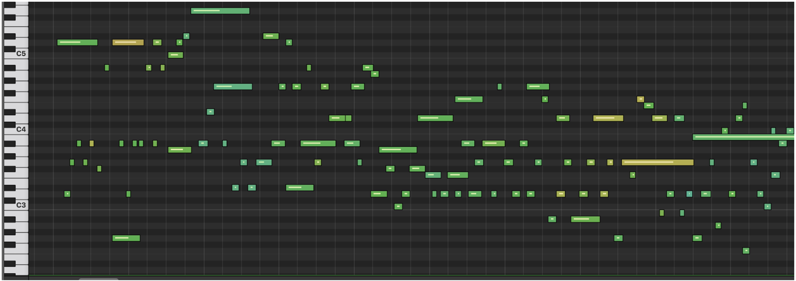

- It's happening right now.
- Computers may replace manual and mental labor.
- Digital maps already acts as road police.
- ML will eventually replace human drivers.
- ML now is a must in the entertainment industry.
- ML can already write texts and produce media.
- ...and so on...
Client-side machine learning:
- privacy
- native support by all modern mobile and desktop browsers
- can work with poor or no internet
- saves server's capacity
Combining server-side and client-side learning:
- can be trained on servers and send to the user’s device
- better accessibility to sensors
- version of Google’s famous TensorFlow
- open-source library
- supports WebGL, and will accelerate your code behind the scenes when a GPU is available
- works with sensor data
- all data stays on the client

checks how good user sings along

mobile game to find emoji n real life

music generator
Link
- Formulate task
- Prepare data (clean, shuffle, normalize)
- Build and run model
- Define model then add layers to it
- Choose an optimizer, and parameters (batch, epochs)
- Choose loss function, and an accuracy metric to help your evaluate progress
- Monitor training to see whether the loss is going down
- Evaluate model
- try making some test predictions to get a sense of prediction quality.